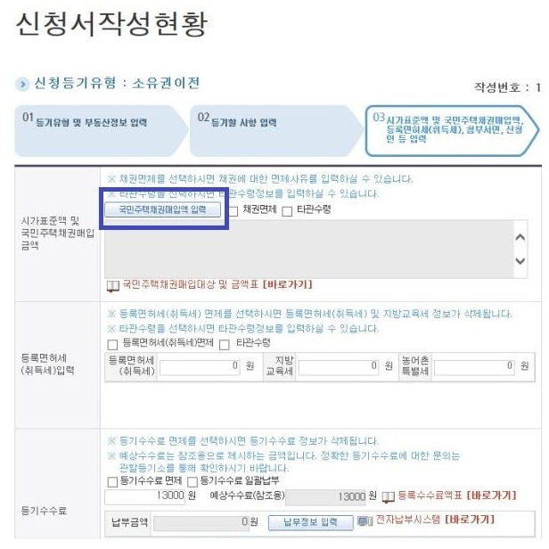
다음은 국민주택채권매입액을 쓰셔야 합니다.
다음과 같이 입력하세요.
국민주택채권매입액 :
채권할인율 :
시가표준액 :
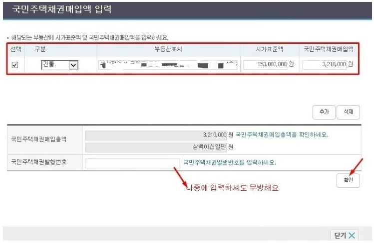
시가표준액 입력하시고 채권매입 후 발행번호도 입력해야합니다.
매입은 나중에 하신 뒤 수기로 입력하셔도 무방합니다.
그리고 확인 클릭
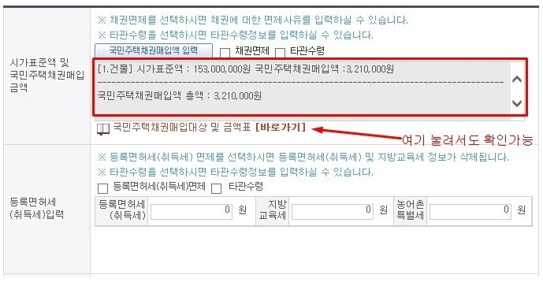
바로가기 누르시면 매입대상 및 금액표가 나옵니다.
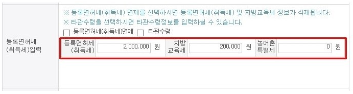
그 다음 취득세를 입력합니다.
취득세 :
지방교육세 :
농어촌 특별세 :
입니다. 취득세 외 농특세는 지자체 마다 다를 수 있으므로
해당 세무과에 문의 후 작성하세요.
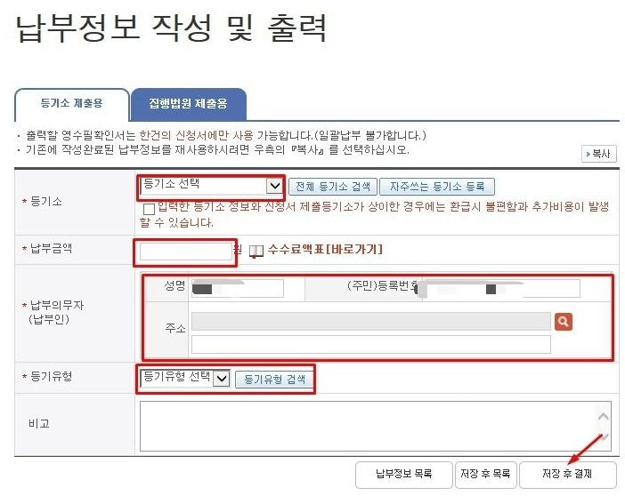
그리고 등기 수수료를 납부해야 합니다. 이폼으로 제출시 13000원 입니다. 납부금액 13000원 입력하고
납부의무자는 매수인 입니다. 등기유형은 소유권 이전입니다.
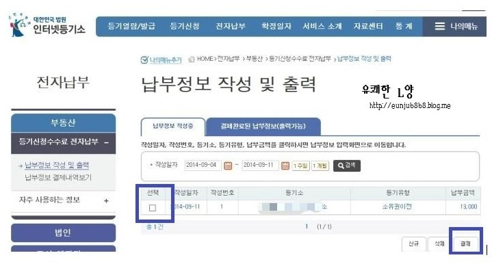
이렇게 화면이 뜨면 결제하세요. 결제하시고 영수증은 출력 후 등기시 첨부서류로 내야합니다.
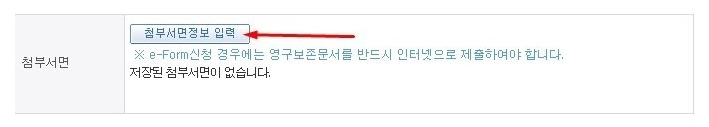
그리고 첨부서면정보 입력란을 누릅니다.
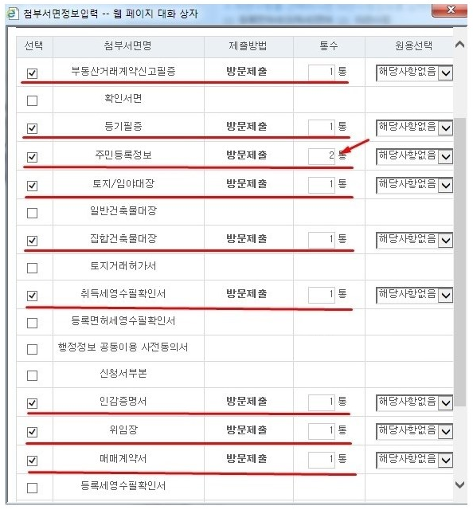
새창이 뜨면 체크합니다.
주민등록정보는 2통입니다.(매수자,매도자용)
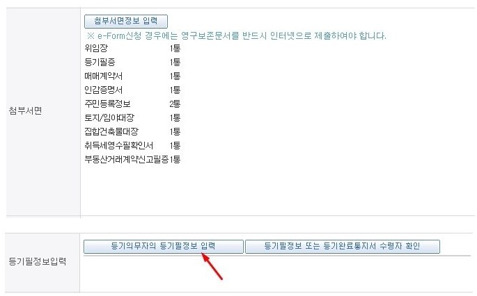
그리고 등기의무자/등기필정보 입력을 클릭하셔서 매도인 정보를 입력합니다.
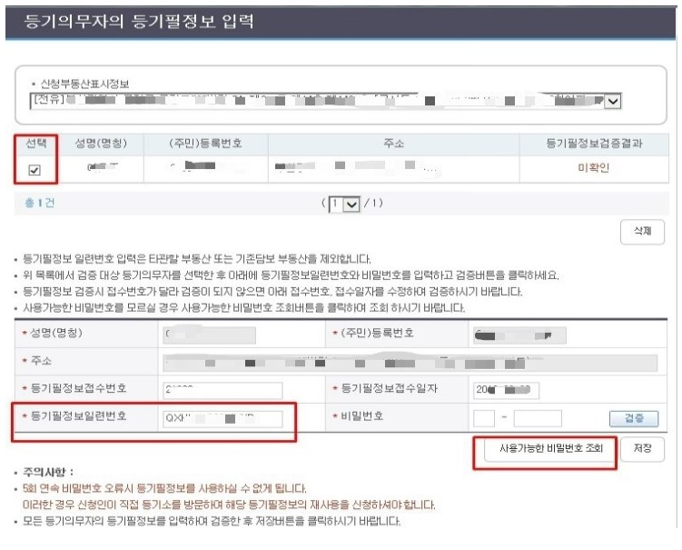
등기필정보일련번호는 등기필정보 및 등기완료통지서에 나옵니다. 매도인에게 확인하세요. 그리고 사용가능 비밀번호 조회를 누릅니다.
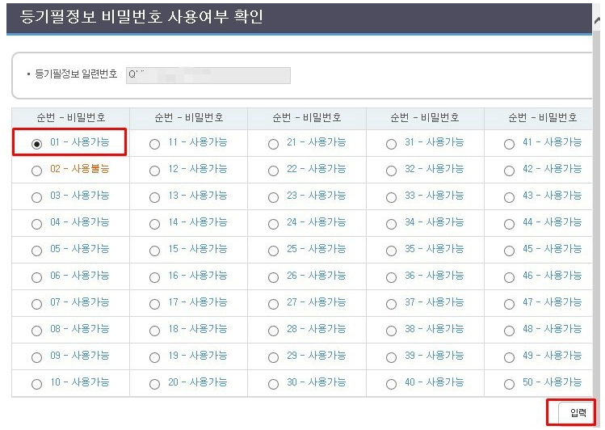
이중에서 사용불능 되어 있는 번호를 빼고 아무거나 클릭해서 입력하면 됩니다.
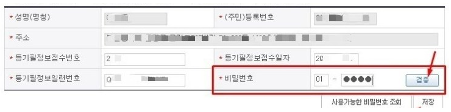
그리고 검증버튼을 누르세요
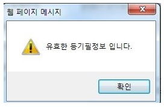
이렇게 뜨면 확인버튼 클릭
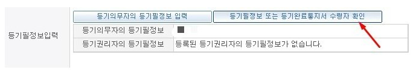
그리고 다음 버튼을 클릭하세요
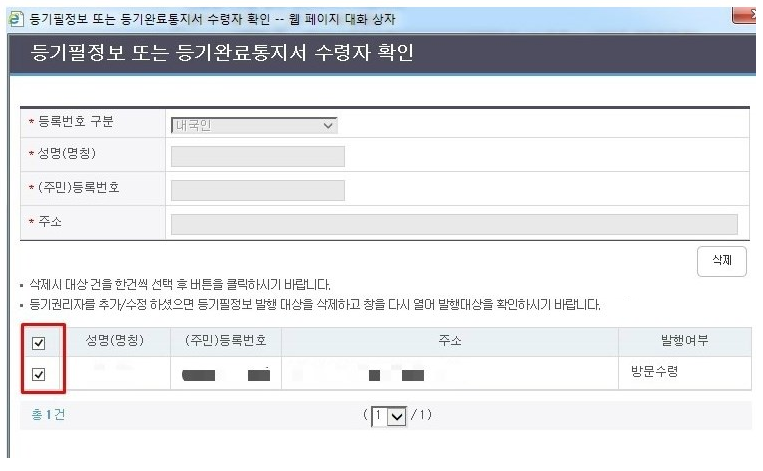
매수인 사항을 기재하시면 됩니다.
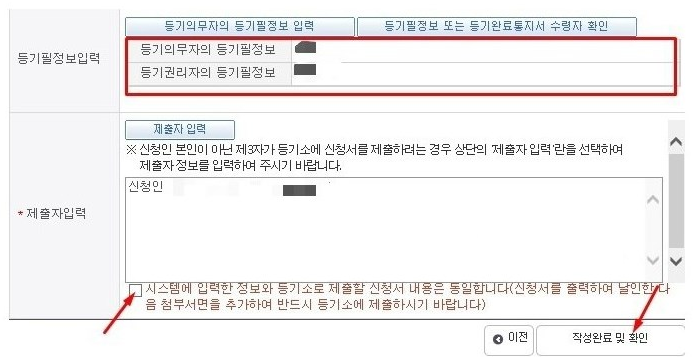
등기 의무자 등기필정보와 등기 권리자 등기필정보 확인 후 제출자 체크하시고 밑에 화살표 체크 그리고 작성완료 및 확인버튼을 클릭하세요.
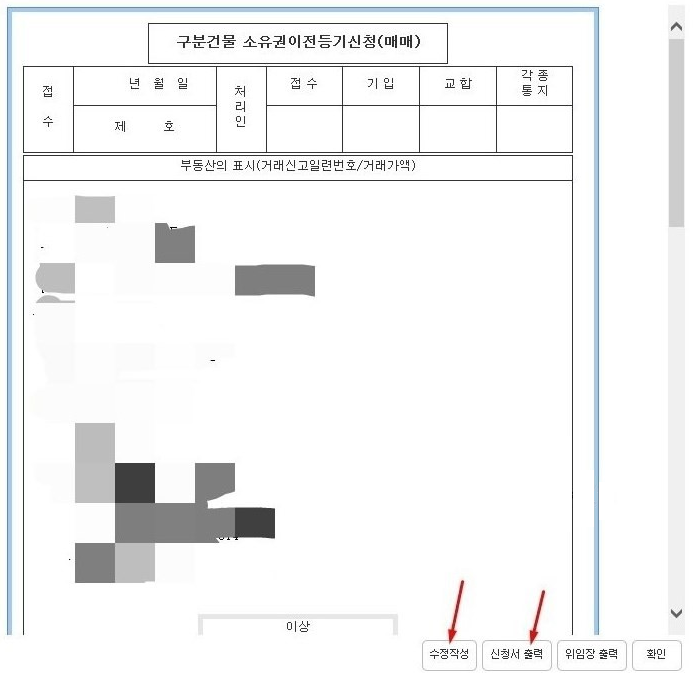
그리고 출력하셔서 제출하시면 됩니다.